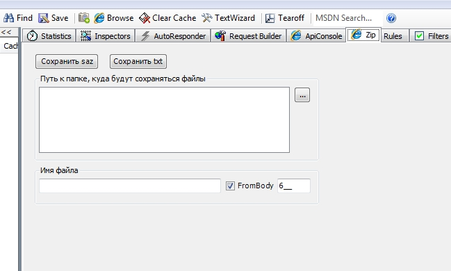

Fiddler Zip extension - 8 December, 2011
Extension for Fiddler.

The source code: FiddlerZip.
The main code:
using System;
using System.Collections.Generic;
using System.Linq;
using System.Text;
using Fiddler;
using System.Windows.Forms;
// It is important !!! see the current version of fiddler
[assembly: Fiddler.RequiredVersion("2.3.4.4")]
namespace FiddlerZip
{
/// <summary>
/// Zip extension
/// </summary>
public class Zip : IFiddlerExtension
{
/// <summary>
/// page for extesnion
/// </summary>
private TabPage oPage;
/// <summary>
/// Control that presented extension
/// </summary>
private ZipControl oAppConsole;
#region IFiddlerExtension Members
public void OnBeforeUnload()
{
}
public void OnLoad()
{
// create tab with name "Zip"
oPage = new TabPage("Zip");
// it is possible to add icon to your tab
oPage.ImageIndex = (int)Fiddler.SessionIcons.FilterBrowsers;
oAppConsole = new ZipControl();
// add control to tab
oPage.Controls.Add(oAppConsole);
oAppConsole.Dock = DockStyle.Fill;
FiddlerApplication.UI.tabsViews.TabPages.Add(oPage);
}
#endregion
}
}